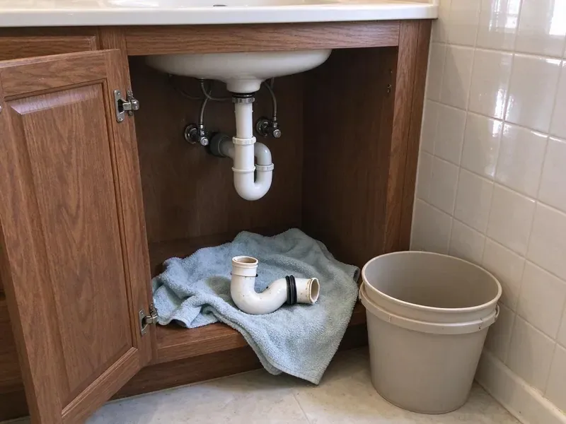

Copper Pipe Leak Repair in Mandan, ND
For trusted copper pipe leak repair in Mandan, ND, HPN Plumbing provides fast and reliable service to protect your home from water damage.
- Long-Lasting Pipe Repair
- Thermal Imaging Leak Detection
- Upfront Pricing
- Licensed & Insured

Get Professional Copper Pipe Leak Repair in Mandan, ND.
Call now and we will locate the leak, repair it cleanly and tell you straight whether more leaks are likely.
Careful Copper Pipe Leak Repair in Mandan, ND That Holds Up
HPN Plumbing focuses on repairing leaks in copper water lines, from pinholes in Type M pipe to failed solder joints and corroded fittings. We use thermal cameras and moisture meters to find the leak with minimal wall openings. Then we cut in new copper or a press fitting and pressure test the repair.
Our expertise includes:
- Section replacement for badly damaged copper piping.
- Soldered and ProPress copper repairs in tight walls and attics
- Inspection of nearby copper for thinning, pitting and green corrosion

Additional Plumbing Repair Services in Mandan, ND
We offer expert plumbing repair services across Mandan, ND to stop leaks, clear blockages, and keep every fixture working the way it should.


Customers
Why Choose HPN Plumbing for Copper Pipe Leak Repair in Mandan, ND?
We do more than solder over a hole. We help you understand why the copper failed and what you can do to protect the rest of your system.
- Local Expertise, Our team knows the plumbing challenges in Mandan, ND, including how water quality affects copper.
- Quality Copper, We repair with Type L copper or press fittings for a sturdier section than the original.
- Advanced Tools, We use non-invasive leak detection technology to pinpoint leaks without needless damage.
Citywide Coverage
HPN Plumbing proudly serves every neighborhood and community within Mandan, so no matter where you are, expert copper pipe leak repair is just a call away. We're committed to being your dependable local plumbing partner.
Experienced Team
Each HPN Plumbing technician goes through thorough training in copper pipe repair techniques, including precise soldering and pipe fitting. You can trust their expertise to deliver a safe and effective repair for your home.
Safety-First Approach
When soldering, we use heat shields, wet rags and a fire extinguisher, and we check the area afterward for any smoldering. In sensitive spots, we use flame-free press fittings instead.
Trusted Certified Mandan Plumbing Services Professionals
At HPN Plumbing, we take pride in providing certified plumbing services throughout Mandan, ND. Backed by recognized industry credentials, our experienced plumbers combine technical skill with genuine customer care. Whether it is repair, installation, or maintenance, we follow strict safety and quality standards to deliver lasting results you can trust.
Call Us Now PHCC Plumbing Contractor Recognition
PHCC Plumbing Contractor Recognition Better Business Bureau (BBB) Accreditation
Better Business Bureau (BBB) Accreditation Angi Certified Pro
Angi Certified Pro ISO 9001 Quality Management Certification
ISO 9001 Quality Management CertificationPrecision Copper Pipe Leak Repair Services in Mandan, ND
Emergency Copper Leak Services in Mandan
Plumbing emergencies don't wait for business hours, and a copper pipe leak can quickly escalate into a major problem. HPN Plumbing provides 24/7 emergency copper pipe leak repair services in Mandan. Whether it's a gushing leak or a steady drip threatening your property, our emergency response team is equipped to handle urgent repairs. We prioritize containing the water damage, making immediate repairs and then planning any necessary follow-up work to restore your plumbing system fully.

Preventive Copper Pipe Maintenance in Mandan, ND
Beyond reactive repairs, HPN Plumbing also offers preventive maintenance services designed to extend the life of your copper pipes in Mandan, ND. This includes assessing water quality, inspecting for early signs of corrosion or wear and advising on water treatment solutions like water softeners to limit hard water effects. Regular inspections can identify potential weak spots before they turn into costly leaks, saving you money and stress in the long run and keeping your plumbing sound.
Copper Pipe Joint Leak Repair in Mandan, ND
Leaks at pipe joints are often due to improper soldering, fatigued connections or shifting foundations. Basements are standard in most homes, and many rely on sump pumps to manage groundwater during wet springs. Our plumbers in Mandan, ND meticulously inspect all joints for signs of weeping or dripping. We can re-solder loose or corroded joints for a watertight seal. In cases where the joint is too damaged, we will replace the fitting and adjacent pipe sections for a secure and durable repair that meets all local plumbing codes.
Copper Fitting and Valve Repair in Mandan
Angle stops, shutoff valves and copper fittings under sinks and behind toilets can weep or seize over time. Hard water minerals build up inside valves and prevent them from closing. We replace failing valves and fittings with quarter-turn ball valves that are easier to operate. That makes future repairs and emergencies easier to manage.
Copper Repair vs Repipe Cost in Mandan, ND
A single copper leak repair is affordable and fast. If you have had two or more pinhole leaks in a year, the copper is likely thinning throughout the system. At that point a PEX or Type L copper repipe can cost less over time than repeated repairs and water damage. We help you compare both options with real numbers.
Copper Pinhole Leak Repair in Mandan
Pinhole leaks are tiny holes that form when the inner wall of copper pipe erodes or pits. They usually appear in thin Type M pipe and on hot water lines where velocity and temperature are higher. We cut out the affected section and replace it with new Type L copper or a PEX transition. While the wall is open, we inspect nearby pipe for discoloration or thinning.
Commercial Copper Pipe Repair in Mandan
Many commercial buildings use larger diameter copper for domestic water supply. Leaks in these systems can affect multiple tenants and require careful shutdown planning. We repair commercial copper lines with press fittings to reduce downtime and avoid hot work permits where possible. We coordinate schedules with building managers.

Corrosion-Related Leak Repair in Mandan
Corrosion is a natural enemy of copper pipes and is made worse by certain water chemistries. Water softeners and filters are popular around Mandan because they extend the life of water heaters, dishwashers and faucets. This can lead to thinning pipe walls and eventual leaks. Our team assesses the extent of corrosion, which might show up as blue-green stains on pipes or fixtures. For localized corrosion, we perform spot repairs, but if corrosion is widespread, we may recommend re-piping sections to prevent recurring issues. We make sure all new connections are properly sealed and protected.
Copper Pipe Leak Repair Near Me in Mandan, ND
We work on copper plumbing in local homes every week and understand how water quality here affects it. That helps us make repairs that last and spot early signs of trouble. Call us to schedule a visit.
When you search for "copper pipe leak repair near me" in Mandan, ND, HPN Plumbing is the go-to local choice. Our location allows us to provide rapid response times, so your plumbing emergency is addressed quickly and efficiently. We pride ourselves on being a dependable community partner.
HPN Plumbing at a Glance
- Fully licensed plumbing team covering Mandan, ND
- Same-day appointments and 24/7 emergency response
- Clear written estimates, no hidden fees
- 4.9-star rated by 408+ North Dakota customers
Mandan Map
Mandan Information
- Population
- 24,586
- Area codes
- Local
- Service area
- Mandan and communities within 40 miles
- Nearby
- Bismarck, Dickinson, Minot, Jamestown
Copper pipe leaks in Mandan, ND homes are frequently made worse by water chemistry and soil movement, which can speed up corrosion and stress plumbing systems, so timely and durable repairs matter. Water softeners and filters are popular around Mandan because they extend the life of water heaters, dishwashers and faucets.
Expert Services
Trust our professionals for reliable HPN Plumbing solutions in Mandan, ND.
Our Specialized Plumbing Services in Mandan, ND
At HPN Plumbing, we provide a complete range of plumbing services across Mandan, ND. From leak detection to full system installations, our team ensures fast, precise, and affordable service for both residential and commercial properties. Explore our core services below:


How Our Copper Pipe Leak Repair Process Works in Mandan, ND
We follow a systematic approach to diagnose, repair and verify every copper pipe leak, delivering lasting results for your home.
Request a Quote
Contact us at (701) 403-1348 to describe your copper pipe leak. We'll schedule an inspection at your earliest convenience, with honest communication from the start.
Thorough Inspection
Our expert plumbers use modern leak detection equipment to accurately locate the source of the copper pipe leak, even if it's hidden behind walls or under floors.
Precise Repair
We use the most effective repair strategy, whether it's a solder repair, section replacement or re-routing, with high-quality materials and techniques for a durable result.
Frequently Asked Questions About Copper Pipe Leak Repair in Mandan
The cost for copper pipe leak repair in Mandan varies a lot, typically ranging from $200 for a minor, accessible pinhole leak to over $2,000 for complex repairs like under-slab leaks requiring extensive work. Factors influencing cost include the leak's location, severity and the amount of pipe replacement needed. We provide transparent, upfront pricing after a full assessment.
PEX resists the corrosion and scale that cause copper pinholes and is flexible and quick to install. If you have repeated copper leaks, repiping with PEX is often a cost-effective long-term solution.
Yes. Our repairs include a written workmanship warranty, and copper pipe and fittings carry manufacturer warranties. We explain the coverage before we start.
Type K, L and M copper pipes differ primarily in their wall thickness and thus their pressure ratings. Type K has the thickest walls and is used for underground service and main water lines. Type L is common for interior water supply and radiant heating. Type M has the thinnest walls and is typically used for less demanding applications. We are skilled in repairing all types.
To prevent future copper pipe leaks, consider installing a whole-house water softener if you have hard water, as mineral buildup can lead to corrosion. Maintaining appropriate water pressure, insulating pipes for cold weather and scheduling periodic plumbing inspections can also significantly extend the life of your copper pipes.
Most straightforward copper pipe leak repairs, such as fixing an accessible pinhole leak or a single joint, can be completed within one to four hours. More complex issues, like leaks under a slab or extensive re-piping, may take a full day or sometimes multiple days, depending on the scope of work.
Copper pipes can leak due to several factors, including corrosion from water chemistry when the pH is too acidic or alkaline, aggressive soil conditions, high water pressure, poor installation or physical damage from foundation shifts. Water softeners and filters are popular around Mandan because they protect water heaters, dishwashers and faucets. Pinhole leaks often result from long-term internal corrosion.
Common signs of a copper pipe leak include unexplained wet spots on walls, ceilings or floors, a sudden drop in water pressure, the sound of running water when no fixtures are in use, unexpectedly high water bills or visible blue-green stains on pipes or nearby surfaces that point to corrosion.
What People Are Saying About Our Plumbing Experts?

Laura S.
I scheduled a water heater replacement, and the team made the process smooth and affordable. The new unit works perfectly, and they cleaned up after completing the job.
Water Heater Replacement · Mandan, ND
Mark T.
When our office needed drain cleaning, HPN Plumbing provided quick, reliable service. The plumber arrived on time and made sure every drain flowed perfectly before leaving. Very satisfied.
Drain Cleaning · Devils Lake, ND
Daniel K.
A pipe burst at 11 pm and they actually answered. The plumber showed up within the hour, shut everything down, and had us back to normal the next morning. Could not ask for more.
Emergency Plumbing · Minot AFB, ND
Patricia H.
We had a slab leak that two other companies could not find. HPN Plumbing located it in under an hour, explained our options, and the price matched the quote to the dollar.
Slab Leak Repair · Minot, ND
Robert G.
The trenchless sewer replacement saved our front yard. They walked us through the camera inspection footage first so we knew exactly what we were paying for.
Sewer Line Replacement · Minot AFB, NDJames P.
Our commercial plumbing system had a leak under the sink, and HPN Plumbing handled it professionally. The plumbers arrived quickly and restored everything without disruption to our customers.
Commercial Plumbing · Bismarck, ND